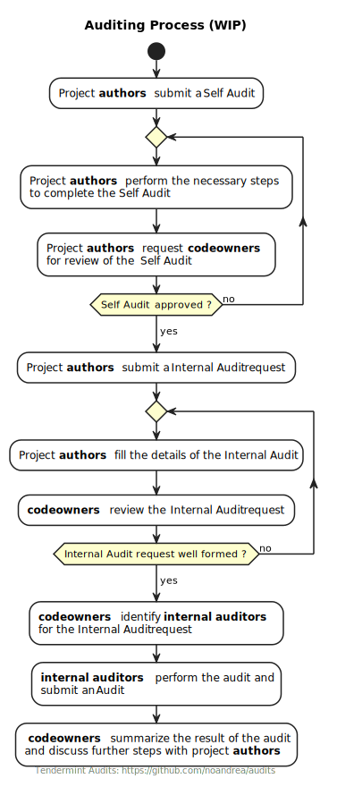

Tendermint Audits Program
The repository introduces a practical setup to realize the auditing protocol for cosmos-sdk based projects outlined here
General setup
The repository shall be overseen by the team that is delegated to oversee security within the Tendermint organization.
The repository is mostly dedicated to:
- tracking issues related to different stages of an audit for a project
- maintaining software tha automates some aspects of an audit (like github actions)
Glossary
- software artifacts - any piece of running code (module, node, smart contract) that is to be released ot a public audience
- authors - are the team or the individuals that have crafted a software artifact
- audit plan - the critical aspects of the software artifacts identified by the authors
- codeowners - are the owners of the audit repository and the responsible to oversee the audit process and rules (the security team)
- internal auditors - are teams or individuals within the Tendermint organization that are performing code review or security audits of software artifacts
- external auditors - are entities outside the Tendermint organization that are performing security audits of software artifacts
- managers Tendermint figures that have management responsibilities
Roles and responsibilities
Authors are responsible to create Self Audit, Internal Audit and External Audit.
They hold the knowledge about what is to be audited and when.
Codeowners are responsible to:
- define the template and requirements for the
Self Audit,Internal AuditandExternal Audit - select the
Internal Auditors - select the
External Auditors - monitor the state of audits and make sure that they are well defined and executed timely. The codeowners should take actions to make sure that the reviews are performed in a timely fashion by re-assign the audits to available resources.
Stages
The following diagram illustrates the auditing process

First Line Defence
The first line defence's work is undertaken by the authors of the artifact to be published
and it is identified by an issue type Self Audit, created by the authors, that indicates:
- the source branch of the code that contains the code to be audited (the release branch)
- a checklist of actions that should be performed by the authors to mark the
Self Auditcompleted
Second Line Defence
The second line defence's work is undertaken by internal auditors upon request by the authors or by the codeowners.
It is identified by and issue of type Internal Audit, created by the authors. The authors should identify
- the source branch of the code that contains the code to be audited (the release branch)
- the audit plan for the artifact
Audits
Internal audits are carried on by Tendermint members, the results of an audit should be submitted in an Audit issue, documenting the details of the audit process and results.
Third Line Defence
The third line defence's work is undertaken by external auditors upon request by the authors or by the codeowners or managers.
It is identified by and issue of type External Audit, created by the authors. The authors should identify
- the source branch of the code that contains the code to be audited (the release branch)
- the audit plan for the artifact
The External audit must be approved by the codeowners or the managers since it requires budgeting outside the authors project scope.
Caveats
- the general project setup is a POC, any specific problems should be addressed by the codeowners
- the issue templates are provided as a current practical use cases for the codeowners benefit.
- this template can be used as a seed template for a auditing biz model for tendermint, in this case some roles will have to be adjusted